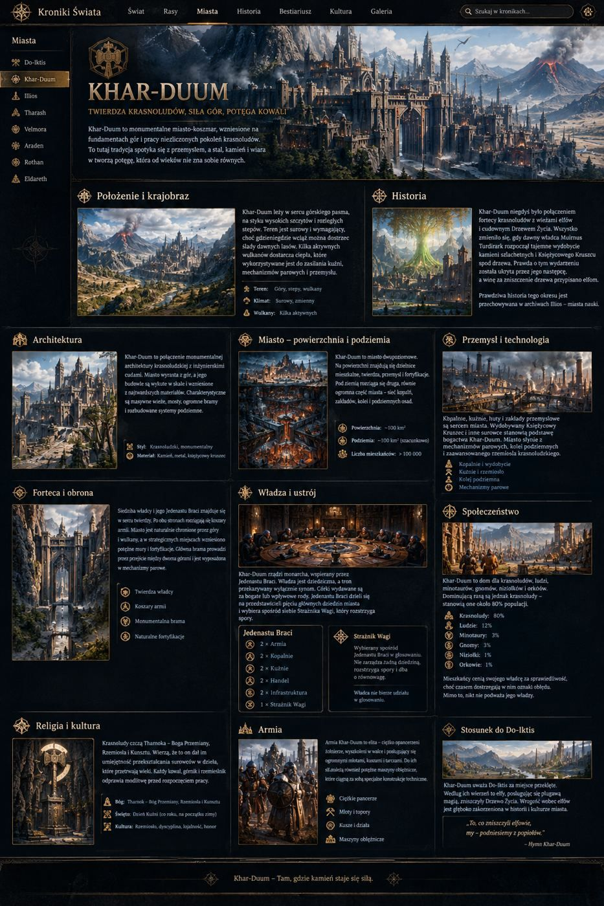

Khar-Duum
⚒ Khar-Duum Wielka twierdza krasnoludów · Serce gór i kuźni „Kamień pamięta każdy cios. Stal pamięta każdą rękę, która nadała jej kształt.”
Khar-Duum to potężna krasnoludzka metropolia wzniesiona w samym sercu rozległego pasma górskiego. Miasto rozciąga się na powierzchni i głęboko pod ziemią, gdzie kopalnie, osiedla, fabryki oraz kolejki górnicze tworzą drugi, równie rozległy świat.
„Kamień pamięta każdy cios. Stal pamięta każdą rękę, która nadała jej kształt.”
❖Informacje ogólne
Khar-Duum to potężna krasnoludzka metropolia wzniesiona w samym sercu rozległego pasma górskiego. Miasto rozciąga się na powierzchni i głęboko pod ziemią, gdzie kopalnie, osiedla, fabryki oraz kolejki górnicze tworzą drugi, równie rozległy świat.
Około czterech piątych mieszkańców stanowią krasnoludy. Wśród pozostałych spotkać można ludzi, minotaury, gnomy, niziołki i orków. Khar-Duum jest bogate, dumne ze swojego rzemiosła i technologii, a jego potęga opiera się na surowcach wydobywanych z gór oraz pracy niezliczonych kuźni.
⌛Historia Khar-Duum

Khar-Duum, miasto wykute w sercu gór.
Zanim powstało Khar-Duum, istniało tu wspólne miasto krasnoludów i elfów, znane jako Khar-Istis . Władali nim dwaj przywódcy: krasnoludzki Muirnus Turdirark, zwany Młoto-rękim , oraz elf Farxalim Vael'Sylvar.
Muirnus ukrywał przed mieszkańcami prawdziwe skutki wydobycia prowadzonego pod Drzewem Życia. Rozległe kopalnie naruszyły podłoże i doprowadziły do śmierci drzewa. Gdy Farxalim odkrył prawdę, wypowiedział krasnoludom wojnę. Nie zdołał jednak pokonać liczniejszych i znacznie bogatszych przeciwników. Opuścił Khar-Istis wraz ze swoim ludem, przysięgając odzyskać utraconą ziemię.
Po odejściu elfów Muirnus rozbudował potężną twierdzę i nadał miastu nową nazwę: Khar-Duum. Miała być świadectwem kunsztu krasnoludzkich kamieniarzy, górników i budowniczych. Po jego śmierci władzę przejął ród Turdirarków. Obecnym monarchą jest Farnur Turdirark, zwany Kruszycielem Skał, który zasiada na tronie od niemal siedemdziesięciu lat.
✦Religia i wierzenia
Wśród krasnoludów Khar-Duum szczególnym szacunkiem otaczany jest Tharmek, Bóg Przemiany, Rzemiosła i Kunsztu . To patron tych, którzy potrafią nadać surowemu materiałowi nową formę: kowali, kamieniarzy, górników, konstruktorów i mistrzów mechaniki.
Wierni widzą w pracy rzemieślnika coś więcej niż sposób zarabiania na życie. Każdy dobrze wykonany przedmiot jest świadectwem cierpliwości, dyscypliny i szacunku dla materiału. Kuźnie i warsztaty bywają miejscami modlitwy równie ważnymi jak tradycyjne kaplice.
Tharmek jest nową propozycją bóstwa stworzoną na potrzeby kroniki. Jego status i szczegóły kultu można jeszcze dopasować do kanonu świata.
⚖Gospodarka i rzemiosło
Podstawą bogactwa Khar-Duum są kopalnie, kuźnie, warsztaty i handel wyrobami krasnoludzkich rzemieślników. Z gór wydobywa się żelazo, złoto, diamenty i wiele innych minerałów. W kuźniach powstają broń, pancerze, narzędzia, elementy machin oraz urządzenia napędzane parą.
W pobliżu miasta znajdują się czynne wulkany. Ich ciepło jest wykorzystywane w procesach przemysłowych i zasila część zaawansowanych mechanizmów. Nie zmienia to jednak całego regionu w morze lawy - pomiędzy surowymi zboczami wciąż istnieją doliny, płaskowyże i miejsca porośnięte drzewami.
Szczególne znaczenie mają złoża rudy księżycowej pod dawnym miejscem Drzewa Życia. Minerał jest niezwykle cenny, lecz delikatny i trudny w wydobyciu. Choć pokłady są ogromne, prace postępują powoli, a niewielu górników zna właściwe metody jego pozyskiwania.
W miejscu dawnego pnia zachowała się część starego drzewa. Wewnątrz znajduje się wejście do rozległej sieci kopalń, przez którą przebiega wewnętrzna kolejka napędzana parą.
♛Władza i polityka
Khar-Duum jest monarchią dziedziczną, a najwyższą władzę sprawuje Farnur Turdirark, Kruszyciel Skał. Tron przechodzi na męskich potomków władcy. Córki nie dziedziczą korony, a ich małżeństwa często wzmacniają więzi z najbogatszymi i najbardziej wpływowymi rodami.
Władcy towarzyszy Jedenastu Braci - jego najwierniejsi przyjaciele i wojownicy, obdarzeni honorowym tytułem. Dziesięciu z nich zarządza pięcioma najważniejszymi dziedzinami miasta: armią, kopalniami, kuźniami, handlem i infrastrukturą. Każdą dziedzinę prowadzi dwóch Braci.
Jedenasty Brat nie otrzymuje osobnej dziedziny. Jest wybierany przez pozostałych Braci i rozstrzyga spory między dwoma zarządcami tej samej dziedziny, gdy nie potrafią uzgodnić wspólnego stanowiska. Władca nie bierze udziału w głosowaniu.
Farnur pozostaje suwerenem i najwyższym autorytetem. Krasnoludy uważają go za sprawiedliwego monarchę, choć niektórzy dostrzegają w jego oczach niepokojące przebłyski szaleństwa.
◆Dzielnice i osiedla Khar-Duum
Górne Miasto
Widoczna część Khar-Duum, z monumentalnymi budowlami, warsztatami, targowiskami i siedzibami wpływowych rodów. Nad dachami unoszą się smugi dymu z kuźni, a kamienne ulice prowadzą ku Wielkiej Fortecy.
Podziemne Miasto
Rozległa sieć osiedli, tuneli, kopalń, fabryk i podziemnych tras kolejowych. Dla wielu mieszkańców to właśnie tutaj znajduje się prawdziwe serce miasta, gdzie surowiec zmienia się w narzędzia, broń i skomplikowane mechanizmy.
Wielka Forteca
Ogromny kompleks zamkowy, w którym znajdują się sala tronowa, komnaty władcy, sale narad, archiwa, skarbce oraz rezydencje Jedenastu Braci i ich rodzin. Po obu stronach fortecy ulokowano koszary.
Wielka Brama
Monumentalne wejście wykute w skale, w wąskiej przełęczy pomiędzy dwiema górami. Napędzane parą mechanizmy, potężne przekładnie i kamienne wrota pozwalają całkowicie zamknąć główny dostęp do miasta.
⛰Geografia i klimat
Khar-Duum leży w sercu ogromnego pasma górskiego. Wraz ze wzrostem wysokości łagodne doliny przechodzą w surowe zbocza, skaliste przełęcze i rozległe płaskowyże przypominające stepy. Mimo trudnego klimatu w niektórych dolinach nadal rosną drzewa i krzewy.
W okolicy znajduje się kilka aktywnych wulkanów. Ich obecność wpływa na temperaturę i warunki geologiczne regionu, a pozyskiwane z nich ciepło wspiera przemysł miasta. Khar-Duum nie jest jednak otoczone nieprzerwanym morzem lawy - to górska kraina o zróżnicowanym krajobrazie.
⚔Armia i siły zbrojne
Siła militarna Khar-Duum opiera się na ciężkozbrojnych oddziałach, doskonałym uzbrojeniu oraz naturalnych umocnieniach gór. Krasnoludzcy żołnierze słyną z wytrzymałości, dyscypliny i umiejętności walki w wąskich przejściach, tunelach oraz na stromych zboczach.
Miasto nie otacza się nieprzerwanym pierścieniem murów. Fortyfikacje wzniesiono przede wszystkim w strategicznych punktach, ponieważ znaczną część obrony zapewniają góry, skalne urwiska i trudne do przebycia przełęcze. Najważniejszym elementem systemu obronnego pozostaje Wielka Brama, którą można szczelnie zamknąć przy użyciu potężnych mechanizmów.
Koszary znajdują się po obu stronach Wielkiej Fortecy. Wojsko korzysta z ciężkiej broni, pancerzy oraz machin wykorzystujących wiedzę inżynierów i mistrzów kuźni.
✎Kultura i społeczeństwo
Khar-Duum zamieszkuje ponad sto tysięcy osób, z czego około osiemdziesiąt procent stanowią krasnoludy. Pozostałą część populacji tworzą przede wszystkim ludzie, minotaury, gnomy, niziołki i orki. Miasto jest wielorasowe, ale jego obyczaje, rytm pracy i hierarchia społeczna pozostają głęboko krasnoludzkie.
Wysoko cenione są fachowość, wytrwałość, lojalność wobec miasta i szacunek do dobrze wykonanej pracy. Rzemieślnik oceniany jest przez jakość swoich wyrobów, a górnik przez doświadczenie i umiejętność bezpiecznego prowadzenia wydobycia. Bogactwo i wpływy często idą w parze z kontrolą nad warsztatami, kopalniami i handlem.
Życie toczy się zarówno na powierzchni, jak i pod ziemią. Dla wielu rodzin podziemne dzielnice są domem od pokoleń, a kolejki górnicze i parowe mechanizmy stanowią zwyczajny element codzienności.
◆Ciekawostki o Khar-Duum
Miasto dwóch poziomów
Podziemna część Khar-Duum jest równie rozległa jak powierzchniowa. Obejmuje nie tylko kopalnie, ale też osiedla, fabryki, warsztaty i sieć kolei górniczych.
Dziedzictwo Khar-Istis
Dawna nazwa miasta przypomina o czasach, gdy krasnoludy i elfy żyły tu pod wspólną władzą. Konflikt o Drzewo Życia pozostawił po sobie trwającą do dziś wrogość.
Ruda księżycowa
Pod dawnym pniem Drzewa Życia znajdują się jedne z najcenniejszych złóż w regionie. Ich wydobycie jest powolne i wymaga wyjątkowej wiedzy.
Khar-Duum uważa elfy za odpowiedzialne za zniszczenie Drzewa Życia i nie zapomniało o odejściu Farxalima Vael'Sylvara. Do-Iktis z kolei obarcza krasnoludy winą za tragedię. Obie strony pielęgnują pamięć o krzywdzie i nie zamierzają łatwo zrezygnować ze swoich roszczeń.